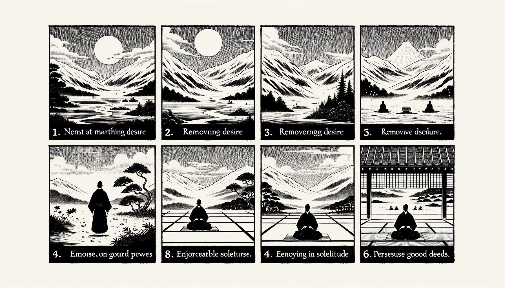

十二巻 巻一覧
正法眼藏第12 八大人覺
本ページの導入・語彙・深掘り・クイズは tools/regen_volume_intro_from_corpus.py が OpenAI API で生成したものです（入力は当巻冒頭原文の抜粋）。内容はモデル出力のため、重要箇所は必ず原文・教本と照合してください。
出典: https://shomonji.or.jp/zazen/doc/genzou.html
（ローカル生成の全文: 全文ページ）
この巻の位置（導入）
諸佛是大人也、大人之所覺知、所以稱八大人覺也。覺知此法、爲涅槃因。
我本師釋迦牟尼佛、入般涅槃夜、最後之所説也。
語彙の足場
- 八大人覺：仏教における八つの重要な覚悟や理解を指し、涅槃の因となるもの。
- 少欲：欲望を少なくすること。多欲に対する概念であり、心の平穏を得るために重要とされる。
- 知足：自分の持っているものに満足すること。幸福や安定をもたらすとされる。
- 樂寂靜：騒がしい環境から離れ、静かな場所で過ごすことの喜び。
- 懃精進：善い行いを懸命に修行し、進むことを意味する。
- 不忘念：法を守り、心の中で常に念を忘れないこと。
本文（冒頭・抜粋）
出典はリポジトリ内 doc/正法眼蔵.txt です。原文の参照元: https://shomonji.or.jp/zazen/doc/genzou.html
諸佛是大人也、大人之所覺知、所以稱八大人覺也。覺知此法、爲涅槃因（諸佛は是れ大人也。大人の覺知する所、所以に八大人覺と稱ず。此の法を覺知するを、涅槃の因と爲）。
我本師釋迦牟尼佛、入般涅槃夜、最後之所説也（我が本師釋迦牟尼佛、入般涅槃したまひし夜の、最後の所説也）。
一者少欲。於彼未得五欲法中、不廣追求、名爲少欲（一つには少欲。彼の未得の五欲の法の中に於て、廣く追求せざるを、名づけて少欲と爲す）。
佛言、汝等比丘、當知、多欲之人、多求利故、苦惱亦多。少欲之人、無求無欲、則無此患。直爾少欲尚應修習、何況少欲能生諸功徳。少欲之人、則無諂曲以求人意、亦復不爲諸根所牽。行少欲者、心則坦然、無所憂畏、觸事有餘、常無不足。有少欲者、則有涅槃、是名少欲（佛言はく、汝等比丘、當に知るべし、多欲の人は、多く利を求むるが故に苦惱も亦た多し。少欲の人は、求むること無く欲無ければ則ち此の患ひ無し。直爾の少欲なるすら尚ほ應に修習すべし、何に況んや少欲の能く諸の功徳を生ずるをや。少欲の人は、則ち諂曲して以て人の意を求むること無く、亦復諸根に牽かれず。少欲を行ずる者は、心則ち坦然として、憂畏する所無し、事に觸れて餘あり、常に足らざること無し。少欲有る者は則ち涅槃有り。是れを少欲と名づく）。
二者知足。已得法中、受取以限、稱曰知足（二つには知足。已得の法の中に、受取するに限りを以てするを、稱じて知足と曰ふ）。
佛言、汝等比丘、若欲脱諸苦惱、當觀知足。知足之法、卽是富樂安穩之處。知足之人、雖臥地上猶爲安樂。不知足者、雖處天堂亦不稱意。不知足者、雖富而貧。知足之人、雖貧而富。不知足者、常爲五欲所牽、爲知足者之所憐愍。是名知足（佛言はく、汝等比丘、若し諸の苦惱を脱れんと欲はば、當に知足を觀ずべし。知足の法は、卽ち是れ富樂安穩の處なり。知足の人は、地上に臥すと雖も猶ほ安樂なりと爲す。不知足の者は、天堂に處すと雖も亦た意に稱はず。不知足の者は、富めりと雖も而も貧し。知足の人は、貧しと雖も而も富めり。不知足の者は、常に五欲に牽かれて、知足の者に憐愍せらる。是れを知足と名づく）。
三者樂寂靜。離諸憒鬧、獨處空閑、名樂寂靜（三つには樂寂靜。諸の憒鬧を離れ、空閑に獨處するを、樂寂靜と名づく）。
佛言、汝等比丘、欲求寂靜無爲安樂、當離憒鬧獨處閑居。靜處之人、帝釋諸天、所共敬重。是故當捨己衆他衆、空閑獨處、思滅苦本。若樂衆者、則受衆惱。譬如大樹衆鳥集之、則有枯折之患。世間縛著沒於衆苦、辟如老象溺泥、不能自出。是名遠離（佛言はく、汝等比丘、寂靜無爲の安樂を求めんと欲はば、當に憒鬧を離れて獨り閑居に處すべし。靜處の人は、帝釋諸天、共に敬重する所なり。是の故に當に己衆他衆を捨して、空閑に獨處し、苦本を滅せんことを思ふべし。若し衆を樂はん者は、則ち衆惱を受く。譬へば、大樹の、衆鳥之に集まれば、則ち枯折の患有るが如し。世間の縛著は衆苦に沒す、辟へば老象の泥に溺れて、自ら出ること能はざるが如し。是れを遠離と名づく）。
四者懃精進。於諸善法、懃修無間、故云精進。精而不雜、進而不退（四つには懃精進。諸の善法に於て、懃修すること無間なり、故に精進と云ふ。精にして雜ならず、進んで退かず）。
佛言、汝等比丘、若勤精進、則事無難者。是故汝等當勤精進。辟如小水常流、則能穿石。若行者之心數數懈癈、譬如鑽火未熱而息、雖欲得火、火難可得。是名精進（佛言はく、汝等比丘、若し勤精進すれば、則ち事として難き者無し。是の故に汝等當に勤精進すべし。辟へば小水の常に流るれば、則ち能く石を穿つが如し。若し行者の心數數懈癈せんには、譬へば火を鑽るに未だ熱からざるに而も息めば、火を得んと欲ふと雖も、火を得べきこと難きが如し。是れを精進と名づく）。
五者不忘念。亦名守正念。守法不失、名爲正念。亦名不忘念（五つには不忘念。亦た守正念と名づく。法を守つて失せざるを、名づけて正念と爲。亦た不忘念と名づく）。
佛言、汝等比丘、求善知識、求善護助、無如不忘念。若有不忘念者、諸煩惱賊則不能入。是故汝等、常當攝念在心。若失念者則失諸功徳。若念力堅強、雖入五欲賊中、不爲所害。譬如著鎧入陣、則無所畏。是名不忘念（佛言はく、汝等比丘、善知識を求め、善護助を求むるは、不忘念に如くは無し。若し不忘念有る者は、諸の煩惱の賊則ち入ること能はず。是の故に汝等、常に念を攝めて心に在らしむべし。若し念を失せば則ち諸の功徳を失す。若し念力堅強なれば、五欲の賊の中に入ると雖も爲に害せられず。譬へば鎧を著て陣に入れば、則ち畏るる所無きが如し。是れを不忘念と名づく）。
六者修禪定。住法不亂、名曰禪定（六つには修禪定。法に住して亂れず、名づけて禪定と曰ふ）。
佛言、汝等比丘、若攝心者、心則在定。心在定故、能知世間生滅法相。是故汝等、常當精勤修習諸定。若得定者、心則不散。譬如惜水之家、善治堤塘。行者亦爾、爲智惠水故、善修禪定、令不漏失。是名爲定（佛言はく、汝等比丘、若し心を攝むれば、心則ち定に在り。心、定に在るが故に、能く世間生滅の法相を知る。是の故に汝等、常に當に精勤して諸の定を修習すべし。若し定を得ば、心則ち散ぜず。譬へば水を惜しむ家の、善く堤塘を治むるが如し。行者も亦た爾り、智惠の水の爲の故に、善く禪定を修して漏失せざらしむ。是れを名づけて定と爲す）。
七者修智惠。起聞思修證爲智惠（七つには修智惠。聞思修證を起すを智惠と爲す）。
佛言、汝等比丘、若有智惠則無貪著、常自省察不令有失。是則於我法中能得解脱。若不爾者、既非道人、又非白衣、無所名也。實智惠者則是度老病死海堅牢船也、亦是無明黒暗大明燈也、一切病者之良藥也、伐煩惱樹之利斧也。是故汝等當以聞思修慧、而自増益。若人有智惠之照、雖是肉眼、而是明眼人也。是爲智惠（佛言はく、汝等比丘、若し智惠有れば則ち貪著無し、常に自ら省察して失有らしめず。是れ則ち我が法の中に於て能く解脱を得。若し爾らずは、既に道人に非ず、又白衣に非ず、名づくる所なし。實智惠は則ち是れ老病死海を度る堅牢の船なり、亦た是れ無明黒暗の大明燈なり、一切病者の良藥なり、煩惱の樹を伐る利斧なり。是の故に汝等當に聞思修慧を以て而も自ら増益すべし。若し人智惠の照あらば、是れ肉眼なりと雖も、而も是れ明眼の人なり。是れを智惠と爲す）。
八者不戲論。證離分別、名不戲論。究盡實相、乃不戲論（八つには不戲論。證して分別を離るるを、不戲論と名づく。實相を究盡す、乃ち不戲論なり）。
佛言、汝等比丘、若種種戲論、其心則亂。雖復出家猶未得脱。是故比丘、當急捨離亂心戲論。汝等若欲得寂滅樂者、唯當善滅戲論之患。是名不戲論（佛言はく、汝等比丘、若し種種の戲論あらば、其の心則ち亂る。復た出家すと雖も猶ほ未だ得脱せず。是の故に比丘、當に急ぎて亂心と戲論とを捨離すべし。汝等若し寂滅の樂を得んと欲はば、唯當に善く戲論の患を滅すべし。是れを不戲論と名づく）。
これ八大人覺なり。一一各具八、すなはち六十四あるべし。ひろくするときは無量なるべし、略すれば六十四なり。
大師釋尊、最後之説、大乘之所教誨。二月十五日夜半の極唱、これよりのち、さらに説法しましまさず、つひに般涅槃しまします。
佛言、汝等比丘、常當一心勤求出道。一切世間動不動法、皆是敗壞不安之相。汝等且止、勿得復語。時將欲過、我欲滅度、是我最後之所教誨（佛言はく、汝等比丘、常に當に一心に勤めて出道を求むべし。一切世間の動不動の法は、皆な是れ敗壞不安の相なり。汝等且く止みね、復た語ふこと得ること勿れ。時將に過ぎなんとす、我れ滅度せんとす。是れ我が最後の教誨する所なり）。
このゆゑに、如來の弟子は、かならずこれを習學したてまつる。これを修習せず、しらざらんは佛弟子にあらず。これ如來の正法眼藏涅槃妙心なり。しかあるに、いましらざるものはおほく、見聞せることあるものはすくなきは、魔嬈によりてしらざるなり。また宿殖善根すくなきもの、きかず、みず。むかし正法、像法のあひだは、佛弟子みなこれをしれり、修習し參學しき。いまは千比丘のなかに、一兩この八大人覺しれる者なし。あはれむべし、澆季の陵夷、たとふるにものなし。如來の正法、いま大千に流布して、白法いまだ滅せざらんとき、いそぎ習學すべきなり、緩怠なることなかれ。
佛法にあふたてまつること、無量劫にかたし。人身をうること、またかたし。たとひ人身をうくといへども、三洲の人身よし。そのなかに、南洲の人身すぐれたり。見佛聞法、出家得道するゆゑなり。如來の般涅槃よりさきに涅槃にいり、さきだちて死せるともがらは、この八大人覺をきかず、ならはず。いまわれら見聞したてまつり、習學したてまつる、宿殖善根のちからなり。いま習學して生生に増長し、かならず無上菩提にいたり、衆生のためにこれをとかんこと、釋迦牟尼佛にひとしくしてことなることなからん。
正法眼藏八大人覺第十二
本云建長五年正月六日書于永平寺
如今建長七年乙卯解制之前日、令義演書記書寫畢。同一校之（如今建長七年乙卯解制の前日、義演書記をして書寫せしめ畢んぬ。同じく之を一校せり）。
右本、先師最後御病中之御草也。仰以前所撰假名正法眼藏等、皆書改、并新草具都盧壹百卷、可撰之云云（右の本は、先師最後の御病中の御草なり。仰せには以前所撰の假名正法眼藏等、皆な書き改め、并びに新草具に都盧壹百卷、之を撰ずべしと云云）。
図解（4コマ・AI生成）
教義の根拠は本文・出典に従い、漫画は比喩の補助に留めてください。

深掘り（読解の手掛かり）
- 八大人覺は、仏教の教えにおいて重要な実践の指針となる。
- 少欲や知足は、心の平和を保つために必要な態度とされる。
- 静寂を楽しむことは、内面的な安らぎを得るために重要である。
確認（形成評価）
各設問の下の「採点」で正誤を表示します（ブラウザ内のみ。ログは送りません）。